Start/Club
Chronik
Unsere Geschichte seit 1932 – von 20 Gründungsmitgliedern am Nienhausenbusch bis zum neuen Clubhaus.
Über 90 Jahre Tennis in Gelsenkirchen
Gegründet als „Gelb-Weiß“, nach dem Krieg neu gegründet als „Gold-Weiß“: Hier findest du die wichtigsten Stationen unseres Vereins – Jahr für Jahr, mit Fotos und Zeitungsausschnitten aus dem Vereinsarchiv.
- 1932
- gegründet als Tennisgesellschaft „Gelb-Weiß“
- 20
- Gründungsmitglieder
- 1947
- Neugründung als „Gold-Weiß“
- 360
- Mitglieder im Rekordjahr 1983
1930er
-
1932 – 1933
Einige Mitglieder des Tennisclubs „Grün-Weiß“ Essen geben den Anstoß zur Gründung einer Tennisgesellschaft im Nienhausen Park. Nach der Zusage der Stadt Gelsenkirchen gründen 20 Personen die Tennisgesellschaft „Gelb-Weiß“ Gelsenkirchen. Zum 1. Vorsitzenden wird Hugo Diekmann gewählt.
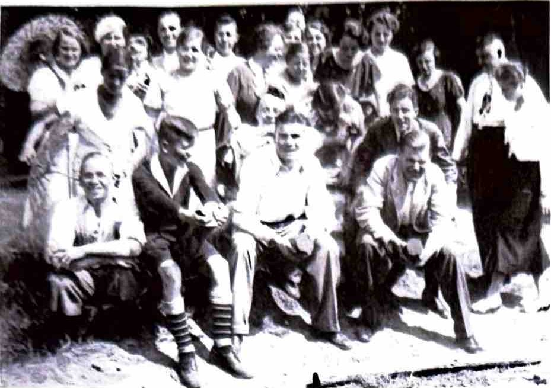
Mitglieder der Tennisgesellschaft „Gelb-Weiß“ in den Jahren 1932/33 -
1934
Herr Schiffmann, Magazinverwalter der Zeche Zollverein, stiftet eine Umkleidemöglichkeit: ein Häuschen mit je einer Umkleide und einem Waschraum, in der Mitte ein 10 × 4 Meter großer Aufenthaltsraum mit Sitzgelegenheiten. Bis dahin musste man sich noch im Keller des Waldhauses umziehen. Da bis 1952 ein WC fehlt, werden weiter die Toiletten des Waldhauses benutzt. Die Frühlingsfeste finden weiterhin im Hotel Hans Sachs statt.
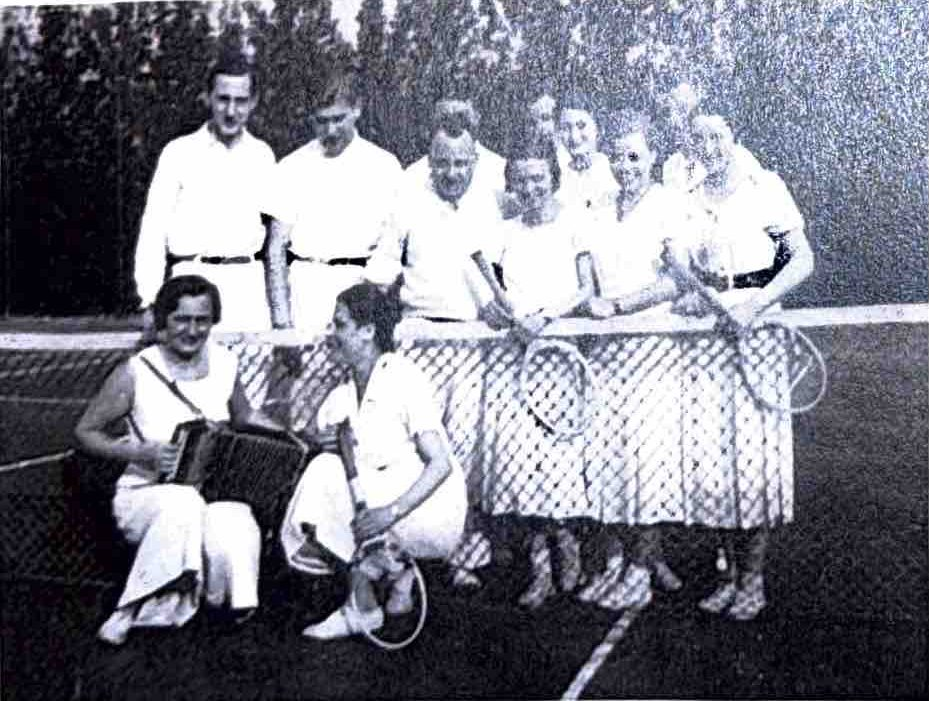
Die erste Turniermannschaft der Tennisgesellschaft „Gelb-Weiß“, 1934 -
1935 – 1944
Über diese Jahre liegen wegen der damaligen Verhältnisse keine Unterlagen und Informationen vor. F. W. Berkau ist in dieser Zeit kommissarischer Vorsitzender.


1940er
-
1945 – 1946
Polnische Kriegsgefangene bauen das Clubhaus ab und verheizen es. Der Platz selbst bleibt von Bombentrichtern verschont.
-
1947 – 1949
Nach Kriegsende folgt am 10. September 1947 die Neugründung unserer Tennisgesellschaft. Aus den Vereinsfarben Gelb-Weiß wird nun Gold-Weiß. Unter der Nummer VR 284 wird die Tennisgesellschaft Gold-Weiß Gelsenkirchen e. V. beim Amtsgericht Gelsenkirchen eingetragen. Zum 1. Vorsitzenden wählt die Versammlung Franz-Werner Viefhaus, der über viele Jahre die Geschicke des Vereins mitbestimmt. Der Verein zählt 25 Mitglieder.
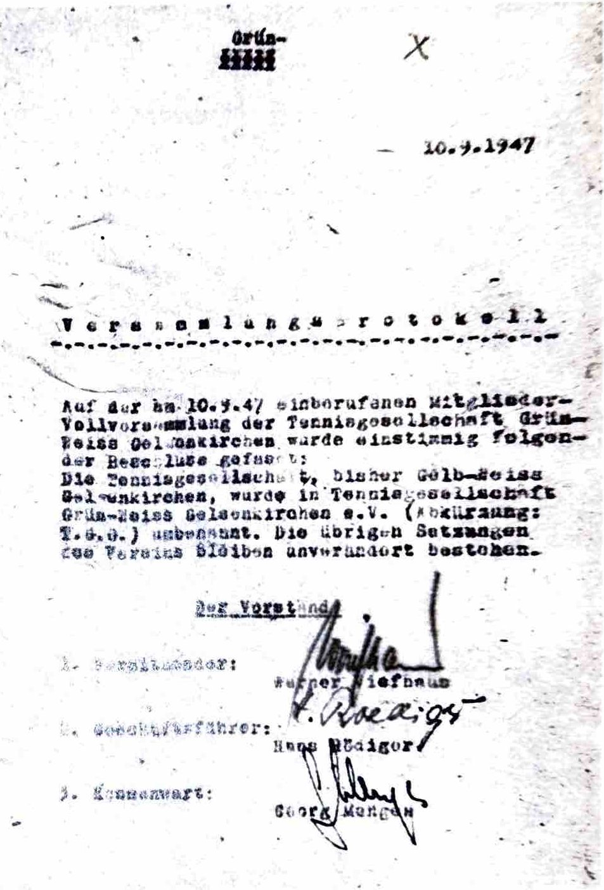
Versammlungsprotokoll der Neugründung vom 10. September 1947

1950er
-
1950
Dr. Heinz Viefhaus entwirft das Vereinsemblem, das bis heute gilt.
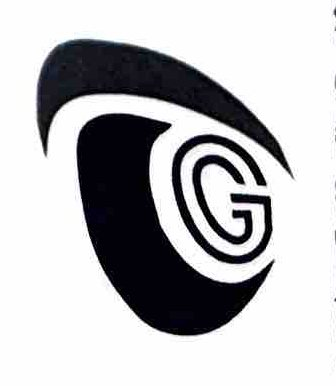
Das Vereinsemblem von 1950 -
1951 – 1952
Dr. Heinz Viefhaus löst seinen Bruder als 1. Vorsitzenden ab. Da die Sportfreunde Essen-Katernberg die Kosten für die Herrichtung der Plätze übernehmen, wird die TG Gold-Weiß eine Unterabteilung dieses ruhmreichen Fußballvereins.
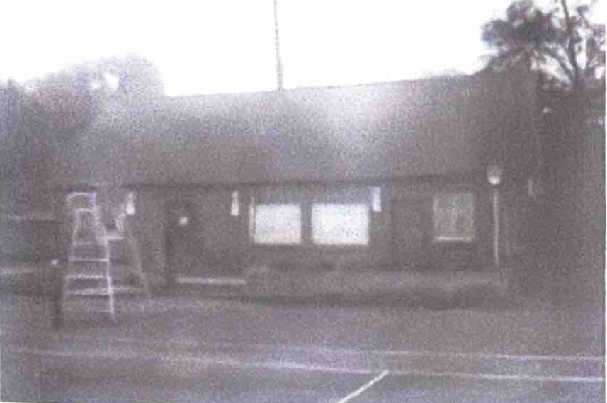
Die alte Tennisanlage mit zwei Aschenplätzen -
1953
Nach Zahlung einer Abstandssumme von 1.000 DM löst sich die TG Gold-Weiß als Unterabteilung von den Sportfreunden Essen-Katernberg.
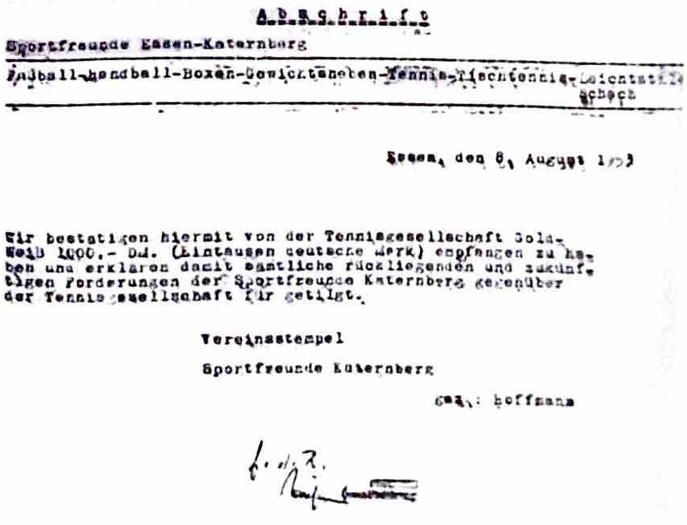
Abschrift der Zahlungsbestätigung über 1.000 DM an die Sportfreunde Essen-Katernberg, August 1953 -
1954 – 1957
In der Damen-Klasse B gewinnt Irene Lunemann die erste Stadtmeisterschaft für den Club. 1957 feiert die TGG ihr 25-jähriges Jubiläum.
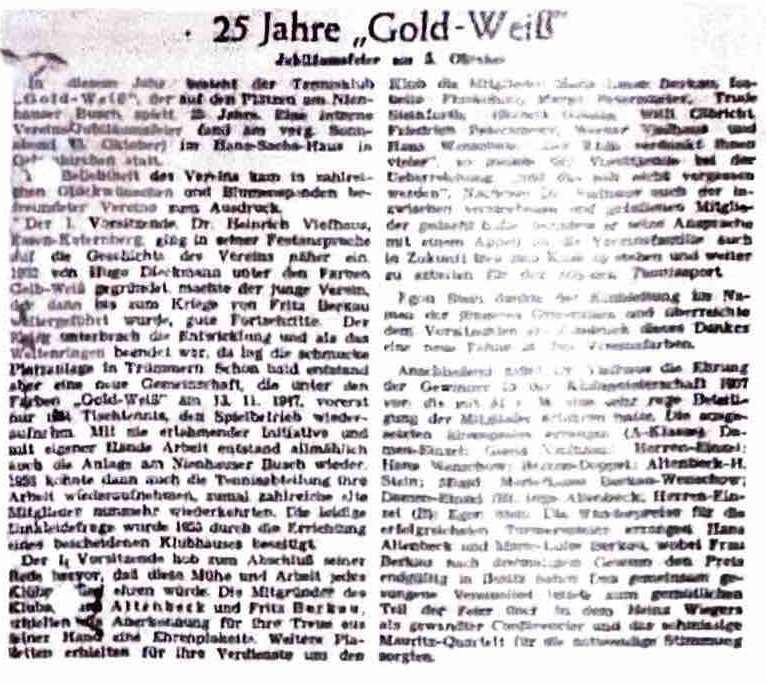
Zeitungsbericht „25 Jahre Gold-Weiß“ zum Jubiläum 1957 -
1958 – 1960
Die TG Gold-Weiß wird weiter von Dr. Heinz Viefhaus geführt, F. W. Viefhaus gehört dem Vorstand weiterhin als Geschäftsführer an. In diesen Jahren tauchen aber auch neue Namen in den Vorstandsmannschaften auf – Namen einer neuen Generation, darunter Egon Stein, Heinz-Josef Roth und Baldur Reul.


1960er
-
1961
Auf Initiative der Gold-Weißen wird das Vier-Vereine-Turnier ins Leben gerufen. Teilnehmer sind die Eisenwerke (TG Bulmke), die Zeche Holland (Grün-Weiß-Gold), die TG Rheinelbe und unsere TGG. 1973 springt der TC Horst für die Zeche Holland ein, 1987 der TC Rotthausen für die TG Rheinelbe. Beim ersten Einzelturnier dieser Pokalrunde, das wir ausrichten, holen wir zwei erste Plätze: Irmgard Schmachtenberg siegt im Damen-Einzel, Hannelore Jacob und Horst Stein im Mixed.
-
1962 – 1964
Heinz Schwalbe löst den langjährigen 1. Vorsitzenden Dr. med. Heinz Viefhaus ab. 2. Vorsitzender wird Erich Solka, Egon Stein übernimmt den Posten des Sportwarts. Hans-Georg Roth beginnt 1964 seine Vorstandsarbeit als Jugendwart – sie soll, was damals noch niemand ahnen kann, über 25 Jahre dauern.
-
1965 – 1966
In den Vorstandsmannschaften tauchen weitere neue Namen auf. Karl-Ulrich Krämer wird 1966 1. Vorsitzender. Der langjährige Geschäftsführer F. W. Viefhaus findet in Alfred Dannat seinen Nachfolger.
-
1967
Unter dem neuen Sportwart Hermann Lück meldet der Verein erstmals eine Mannschaft zu den Medenspielen. Zu dieser ersten Mannschaft gehören:
- Reiner Julius
- Hermann Lück
- Winfried Krämer
- Karl-Ulrich Krämer
- Egon Stein
- Erich Solka
- Lothar Stockhorst
- Dieter Pohe
-
1968
Ein erneuter Vorstandswechsel: Hans-Georg Roth wird neuer Geschäftsführer. Unter der Regie von Karl-Ulrich Krämer wird das Clubhaus umgebaut.
-
1969
Das Amt des 1. Vorsitzenden wird mit Heinz-Josef Roth neu besetzt.
1970er
-
1970
Mit Udo Erwin wird ein neuer Jugendwart gewählt, der dem Vorstand noch viele Jahre angehören wird. Die I. Herrenmannschaft steigt in die Klasse B auf (heute 2. Bezirksklasse).
-
1971
Neuer 1. Vorsitzender wird Heinz-Josef Odendahl. Die erstmals gemeldete II. Herrenmannschaft steigt in die Klasse C auf (heute 3. Bezirksklasse).
-
1972 – 1978
Mit Hermann Lück wird ein neuer 1. Vorsitzender gewählt, der die Geschicke des Vereins über viele Jahre lenken wird. Am 29. Januar stirbt der kurz zuvor gewählte Jugendwart Werner Loch bei einem tragischen Autounfall. Eine III. Herrenmannschaft nimmt den Spielbetrieb auf.
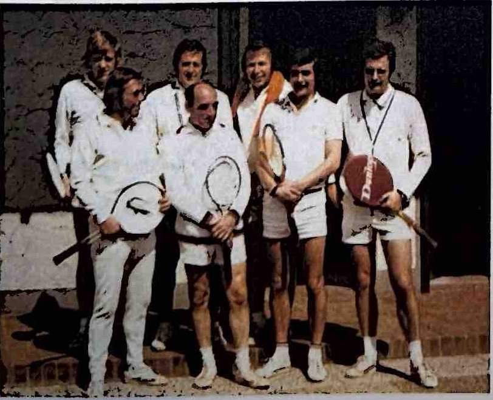
Die III. Medenmannschaft: Dirk Jacob, Heinz König, Winfried Beßling, Heinz Odendahl, Helmut Hirsch, Karl Heinz Thomas, Jürgen Hegmann -
1979
Der Verein nimmt das Pachtangebot der Stadt Gelsenkirchen für das Grundstück an, und die Jahreshauptversammlung erlaubt dem Vorstand, den Neubau der Tennisanlage in Auftrag zu geben. Am 19. November beginnt die Firma Kottig aus Gronau mit den Erdarbeiten.
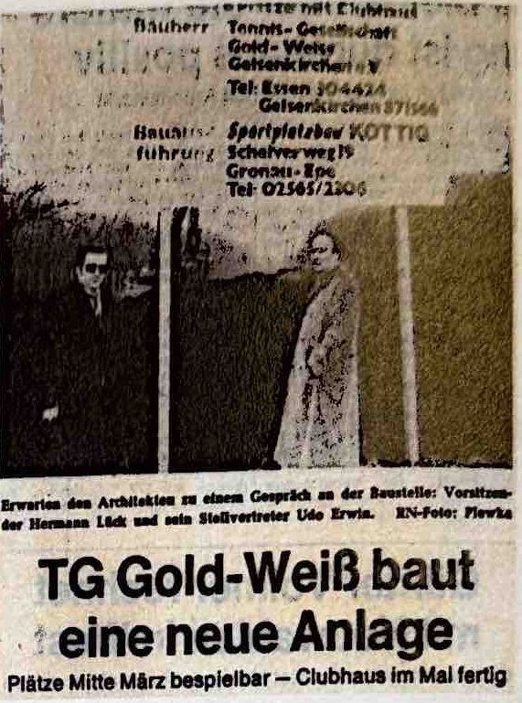
1979: Baubeginn der neuen Anlage – „TG Gold-Weiß baut eine neue Anlage“


1980er
-
1980
Die Saison wird auf der neuen Tennisanlage eröffnet, zunächst noch im alten Clubhaus. Das neue Clubhaus wird am 11. Oktober beim traditionellen Herbstfest eingeweiht. Dem Verein gehören 293 Mitglieder an. Erstmals gewinnen wir den Vier-Vereine-Mannschaftspokal, gegen Ende der Saison auch erstmals den Molwitz-Pokal. Die Knabenmannschaft mit Andreas Adorf, Guido Rossmann, Jens Rose und Manuel Schulz steigt in die Leistungsklasse auf. Außerdem steigen die I. Damen in die Bezirksliga und die I. Herren in die 1. Bezirksklasse auf.
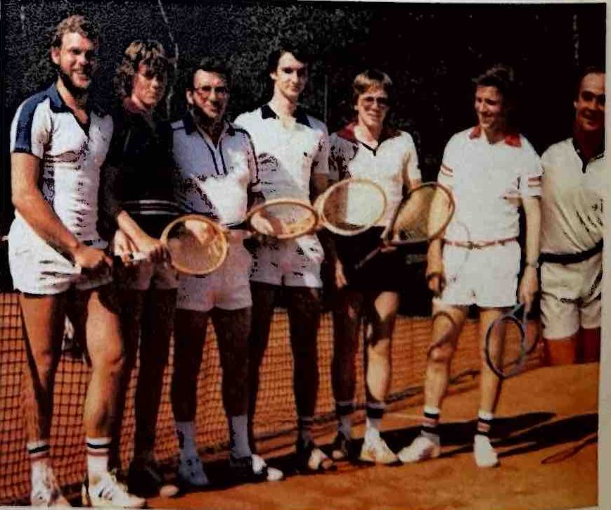
Die I. Herren, Aufstieg in die 1. Bezirksklasse: U. Anzion, M. Adorf, H. Lück, R. Regulski, T. Adorf, U. Krämer, U. Erwin -
1981
Am 25. April wird die neue Tennisanlage offiziell eingeweiht, dazu gibt es ein Einladungsturnier für Mädchen und Jungen. Wegen der neuen Anlage richten wir die Stadtmeisterschaften aus. Die I. Herren schaffen den Sprung in die Bezirksliga, die III. Herren steigen in die 4. Bezirksklasse auf. Die TG Gold-Weiß richtet den Schmetterball der Gelsenkirchener Tennisclubs im Hotel Maritim aus. Erste Überlegungen entstehen, auf der alten Anlage einen dritten Platz zu bauen – das alte Clubhaus muss abgerissen werden, dadurch wird Platz frei.
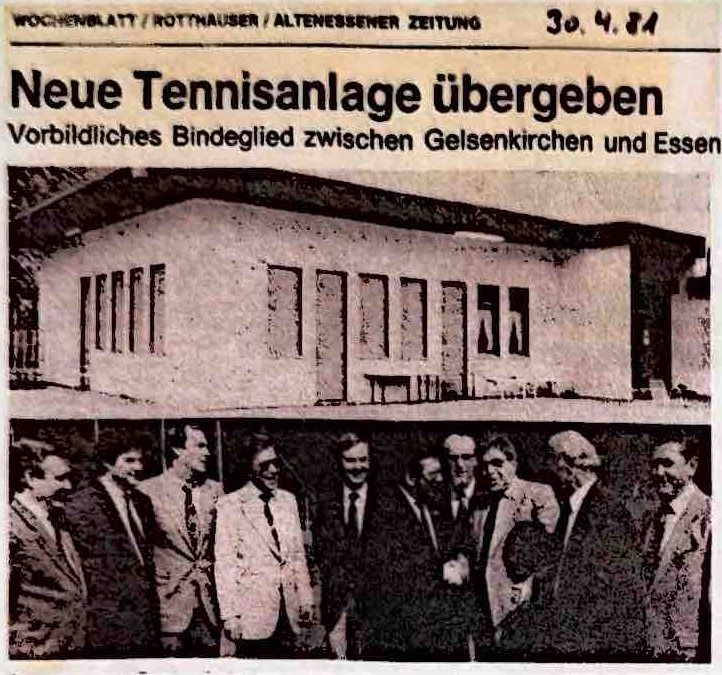
„Neue Tennisanlage übergeben“ – Zeitungsbericht vom 30. April 1981 -
1982
Den 349 Mitgliedern stehen neun Tennisplätze zur Verfügung. Den ersten Titel auf Bezirksebene holt Susanne Krämer bei den Hallenbezirksmeisterschaften der Juniorinnen III. Zum 50-jährigen Jubiläum richten wir die Jugendstadtmeisterschaften aus und feiern am 9. Oktober im Freizeithaus Nienhausen – die Festrede hält der 1. Vorsitzende Hermann Lück. Hermann Lück, Hans-Georg Roth und Heinz-Josef Odendahl erhalten für über 15 Jahre Vorstandsarbeit die bronzene Ehrennadel des Westfälischen Tennisverbandes, überreicht vom 1. Vorsitzenden des Ruhrbezirks, Heiner Langer. Die II. Herren schaffen den Wiederaufstieg in die 3. Bezirksklasse, die II. Damen steigen in die 2. Bezirksklasse auf.
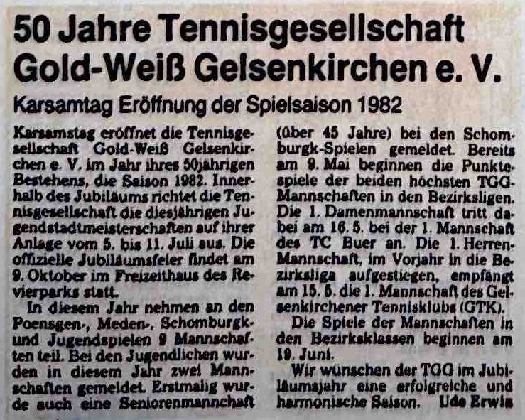
„50 Jahre Tennisgesellschaft Gold-Weiß“ – Zeitungsbericht zur Saisoneröffnung 1982 -
1983
Mit der Stadt Gelsenkirchen wird ein neuer Pachtvertrag für die alte Anlage bis zum 31.12.1991 geschlossen. Dem Verein gehören 360 Mitglieder an. Auf der Jahreshauptversammlung tritt der gerade wiedergewählte Vorstand zurück, weil die Mitglieder eine notwendige Beitragserhöhung ablehnen. Auf der außerordentlichen Versammlung wird der Vorstand bis auf zwei Positionen wiedergewählt und die Erhöhung als einmalige Umlage beschlossen. Zur Jugendförderung gründet sich ein Jugendförderkreis. Die II. Herren steigen in die 2., die IV. Herren in die 5. Bezirksklasse auf. Die gemischte Jugendmannschaft wird Ruhr-Bezirksmeister, und bei den Stadtmeisterschaften ist die TGG mit fünf Stadtmeister- und zwei Vizetiteln der erfolgreichste Verein.
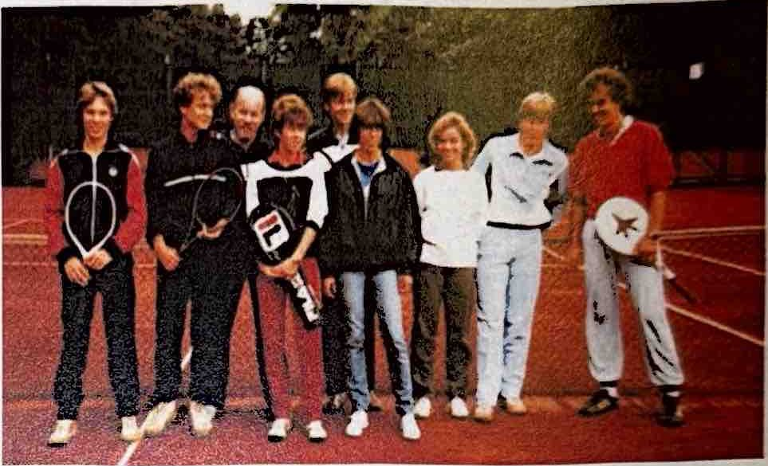
Mannschaftsfoto aus dem Jahr 1983 -
1984
Im Februar erscheint die erste Ausgabe der Vereinszeitung „TGG Magazin“. Vier Mannschaften steigen auf: die Jungsenioren in die 1. Bezirksklasse, die II. Damen in die Bezirksliga, die Henner-Henkel-Mannschaft in die Leistungsklasse und die Senioren in die 1. Bezirksklasse. Gegen Ende der Saison verlieren wir die hoffnungsvollen Jugendlichen Jens Rose, Guido Rossmann und Steffen Budweg an den GTK.
-
1985
355 Mitglieder gehören dem Verein an. Der neue Sportwart Reiner Hillebrandt ruft das Ferien-Doppelturnier ins Leben. In der Winterhallenrunde steigen die I. Herren in die Bezirksliga auf, die IV. Herren schaffen den Wiederaufstieg in die 4. Bezirksklasse. Die I. Damen müssen leider aus der Bezirksliga absteigen.
-
1986
Am 5. Februar veranstaltet der Festausschuss das erste Tennis-Mixed-Nachtturnier. Zum zweiten Mal wird die Stadtmeisterschaft auf unserer Anlage ausgetragen. Die I. Herren müssen nach fünf Jahren aus der Bezirksliga absteigen, die IV. Herren können die 4. Bezirksklasse nicht halten. Hermann Lück erhält vom Stadtsportbund die goldene Ehrennadel für 13 Jahre als Gelsenkirchener Fachschaftsleiter Tennis.
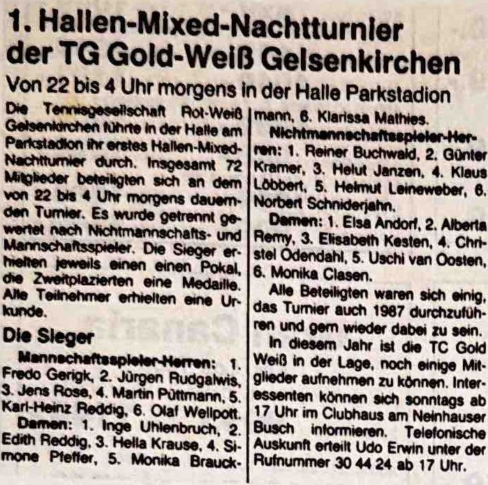
„1. Hallen-Mixed-Nachtturnier“ – von 22 bis 4 Uhr morgens in der Halle am Parkstadion -
1987
Für diese Saison meldet der Verein erstmals 15 Mannschaften, darunter fünf Jugendmannschaften. Die I. Damen schaffen den Wiederaufstieg in die Bezirksliga.
-
1988
Mit 339 Mitgliedern geht die TGG ins Jahr. In den Aufstiegsrunden zur Verbandsliga scheitern die Seniorinnen und die I. Jungsenioren. Zum zweiten Mal in der Vereinsgeschichte wird die gemischte Jugendmannschaft Ruhr-Bezirksmeister. Die I. Herren steigen wieder in die Bezirksliga auf.
-
1989
Die gemischte Jugendmannschaft wiederholt ihren Erfolg und wird erneut Ruhr-Bezirksmeister. Die I. Jungsenioren scheitern wie im Vorjahr in der Aufstiegsrunde zur Verbandsliga. Nach zwei Jahren Pause gewinnen wir wieder den Vier-Vereine-Mannschaftspokal, beim Einzelturnier dazu fünf Pokale. Bei den Stadtmeisterschaften feiern wir den bisher größten Erfolg mit fünf Stadtmeistern und sechs Vizestadtmeistern. Gegen Ende der Saison gewinnt die TGG den Molwitz-Pokal.
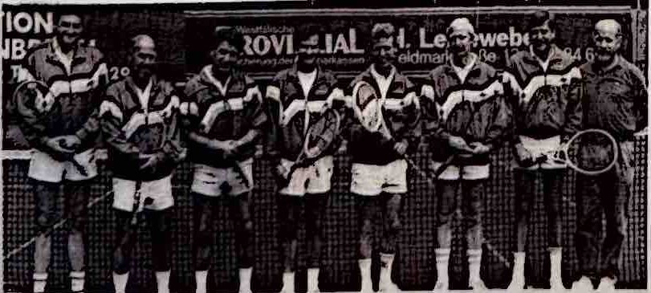
Mannschaftsfoto, Ende der 1980er-Jahre


1990er
-
1990
Wie im Vorjahr starten wir mit 15 Mannschaften in die Meisterschaftsrunden, davon fünf Jugendmannschaften. Die Mädchen steigen in die Leistungsklasse auf. Die Seniorinnen werden ungeschlagen Gruppensieger der Bezirksliga, gewinnen in den drei Aufstiegsspielen zur Verbandsliga aber kein Spiel. Den Vier-Vereine-Mannschaftspokal verteidigen wir erfolgreich, beim Endturnier gewinnen wir sieben von acht möglichen Pokalen – und auch den neu gestifteten Wanderpokal für die erfolgreichste Mannschaft beim Einzelturnier. Auch der Molwitz-Pokal bleibt bei uns.
-
1991
Heinz-Josef Odendahl scheidet nach 25 Jahren aus persönlichen Gründen aus dem Vorstand aus, sein Nachfolger als Schriftführer wird Klaus Penski. Zu Jahresbeginn zählt die TGG 329 Mitglieder. Zum dritten Mal finden die Gelsenkirchener Stadtmeisterschaften auf unserer Anlage statt – mit fünf Stadtmeistern und einem Vizestadtmeister für uns. Dazu eine wahre Aufstiegsflut: Fünf Mannschaften steigen auf, und erstmals in der Vereinsgeschichte gelingt der Aufstieg in die Verbandsliga – gleich mit zwei Mannschaften, den Seniorinnen und den I. Jungseniorinnen. Außerdem steigen die II. Jungsenioren in die Bezirksliga, die I. Senioren in die Bezirksliga und die II. Senioren in die 3. Bezirksklasse auf. Beim Vier-Vereine-Turnier gewinnen wir wieder den Mannschaftspokal und beim selbst ausgerichteten Einzelturnier vier Pokale. Auch der Molwitz-Pokal wird verteidigt. Auf dem Herbstfest erhalten Reiner Hillebrandt und Udo Erwin für 15 Jahre Vorstandsarbeit die bronzene Ehrennadel des Westfälischen Tennisverbandes.
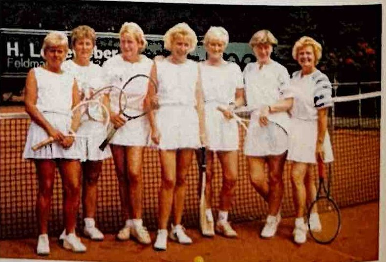
Damenmannschaft, Anfang der 1990er-Jahre -
1992
Der Verein feiert sein 60-jähriges Bestehen und zählt Mitte des Jahres 323 Mitglieder. Am 26./27. September findet das Einladungsturnier um den Nissan-Wegmann-Cup mit acht Spielern statt. Bei sonnigem Wetter gewinnt Stephan Rhode (OTHC Oberhausen) – mit vielen Besuchern, auch beim Jazz-Frühschoppen. Das Jubiläumsfest folgt am 31. Oktober. Die Festansprache hält der 1. Vorsitzende Hermann Lück, der für 25 Jahre Vorstandsarbeit die goldene Ehrennadel der TGG erhält. Für 25 Jahre Mitgliedschaft werden die Ehepaare Hella und Georg Krause sowie Mechthild und Hans-Werner Keßler geehrt. Jugendwart Walter Lenzen scheidet aus, Nachfolger werden Manfred Pelka und Elisabeth Blauser. Sportlich steigen Seniorinnen und I. Jungseniorinnen mit viel Pech wieder aus der Verbandsliga ab, die II. Jungsenioren aus der Bezirksliga. Neu in der Verbandsliga sind die I. Jungsenioren, und die erstmals gemeldeten Senioren AK II schaffen auf Anhieb den Sprung in die Bezirksliga.
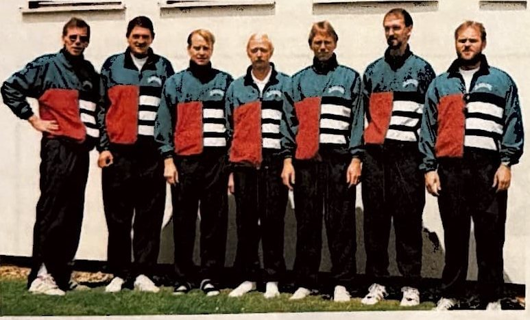
Mannschaftsfoto, 1992 -
1993
Die Tennisgesellschaft geht mit 310 Mitgliedern in die Saison. Die I. Jungseniorinnen schaffen den Wiederaufstieg in die Verbandsliga, die I. Jungsenioren müssen leider wieder absteigen. Die Seniorinnen scheitern in der Aufstiegsrunde, die II. Senioren steigen in die 2. Bezirksklasse auf. Bei den Bezirksmeisterschaften gewinnen Ursula Trompeter und Klaudia Woelk das Jungseniorinnen-Doppel. Beim Vier-Vereine-Turnier holen wir den Mannschaftspokal und mit vier Titeln im Einzelturnier wieder den Vosswinkel-Pokal. Udo Erwin wird auf dem Herbstfest für 25 Jahre Mitgliedschaft geehrt. Manfred Pelka kandidiert nicht mehr als Jugendwart, Elisabeth Blauser wird wiedergewählt und führt das Amt nun allein.
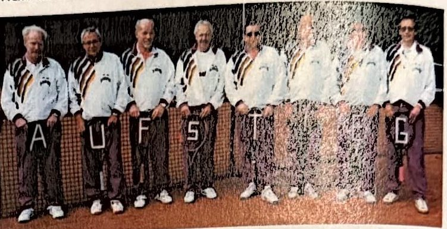
„Aufstieg!“ – Mannschaftsfoto, 1993 -
1994
315 Mitglieder zählt die Tennisgesellschaft zu Jahresbeginn. Im April stirbt unser langjähriger Clubwirt Herbert Pfeffer. Simone Pfeffer und Jenny van der Velde verstärken die Damenmannschaft. Die I. Jungseniorinnen scheitern knapp am Aufstieg in die Oberliga, die I. Jungsenioren in der Aufstiegsrunde zur Verbandsliga. Die Seniorinnen schaffen den Wiederaufstieg in die Verbandsliga, die Damen den direkten Wiederaufstieg in die 1. Bezirksklasse, und die neu gegründeten III. Senioren steigen sofort in die 3. Bezirksklasse auf. Die gemischte Jugendmannschaft AK V wird Vize-Ruhrbezirksmeister. Wieder gewinnen wir den Mannschaftspokal des Vier-Vereine-Turniers und mit vier Einzeltiteln den Vosswinkel-Pokal. Mit Inge Uhlenbruch, Klaudia Woelk, Reinhard Regulski, Hartmut Woelk, Peter Kalecinski, Günter Ronke, Georg Moshövel und Reinhard Holthaus holen wir auch den Molwitz-Pokal zurück. Für 25 Jahre Mitgliedschaft wird das Ehepaar Irmgard und Winfried Beßling geehrt.
-
1995
Der Verein zählt 309 Mitglieder. Zu Jahresbeginn stirbt Margret Rhode. Erste Überlegungen für einen Clubhausanbau entstehen: ein Lagerraum für den Festausschuss sowie eine größere Küche und ein größeres Sitzungszimmer. Die Hauptversammlung genehmigt den Anbau, und schon im November beginnen die Arbeiten. Susanne Krämer kehrt von der TG Bochum 49 zurück, und die Damen steigen ungeschlagen in die Bezirksliga auf. Die gemischte Jugendmannschaft AK V wird ungeschlagen Ruhr-Bezirksmeister, die I. Jungsenioren kehren in die Verbandsliga zurück, die Seniorinnen steigen ab. Das Jubiläumsturnier des TC Ückendorf gewinnen wir. Kristin Poppek wird Bezirksjüngstenmeisterin im Einzel, Katharina Rath mit Lisa Thomsen (TG Hüls) im Doppel. Den Vier-Vereine-Mannschaftspokal verteidigen wir, gewinnen drei Pokale beim Endturnier, drei Stadtmeistertitel und den 2. Platz beim Molwitz-Pokal. Auf dem Herbstfest werden mit Reinhilde Krämer, Dr. Heinz Schwalbe und Dieter Pohe die ersten Jubilare für 40 Jahre Mitgliedschaft geehrt, Reinhard Regulski erhält für 25 Jahre die silberne Ehrennadel.
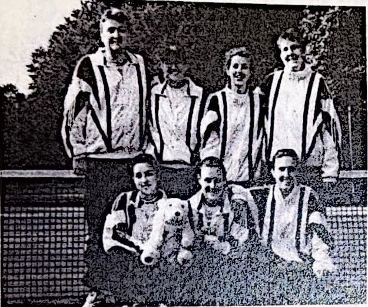
Mannschaftsfoto, Mitte der 1990er-Jahre -
1996
Die Mitgliederzahl steigt im Laufe des Jahres von 292 auf 315. Der Clubhausanbau nimmt Formen an. Den größten sportlichen Erfolg der Vereinsgeschichte feiern die I. Jungseniorinnen mit dem Aufstieg in die Oberliga. Die Seniorinnen bleiben in der Verbandsliga. Beim Jubiläumsturnier des TC Rotthausen belegen wir den 3. Platz. Den Vier-Vereine-Mannschaftspokal verteidigen wir, beim Endturnier gewinnen wir zwei Pokale. Bei den Stadtmeisterschaften holen wir sechs Titel, bei den Jugendstadtmeisterschaften zwei. Beim Molwitz-Pokal wird es wieder Platz 2. Das zweite Turnier um den Nissan-Wegmann-Cup bietet sportlich hervorragendes Tennis.
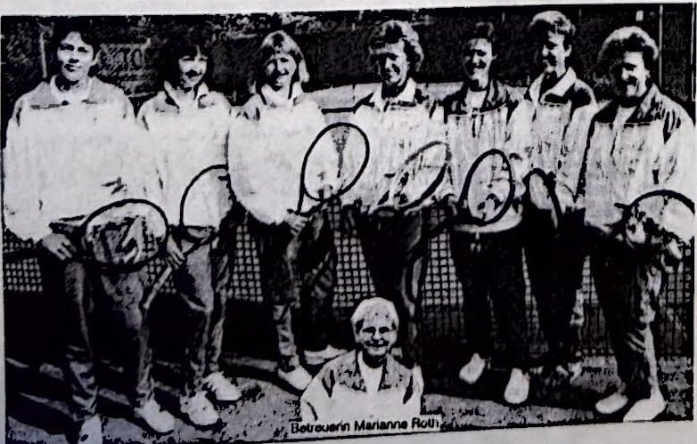
Mannschaftsfoto 1996 mit Betreuerin Marianne Roth -
1997
Die Mitgliederzahl sinkt im Laufe des Jahres von 302 auf 295. Die I. Jungseniorinnen halten sich in der Oberliga, die Seniorinnen in der Verbandsliga, die Jungsenioren müssen aus der Verbandsliga absteigen. Die 1. Senioren AK II steigen in die Bezirksliga auf, die 2. Herren in die 3. Bezirksklasse, die Mädchen und die Henner-Henkel-Mannschaft jeweils in die 2. Leistungsklasse. Den Vier-Vereine-Mannschaftspokal verteidigen wir, beim Endturnier holen wir drei Pokale, bei den Stadtmeisterschaften sieben Titel und sechs 2. Plätze. Beim Molwitz-Pokal wird es erneut Platz 2. Im Oktober stirbt das langjährige Mitglied Wolfgang Willert. Am 1. Dezember übernimmt das Ehepaar Sander die Bewirtschaftung.
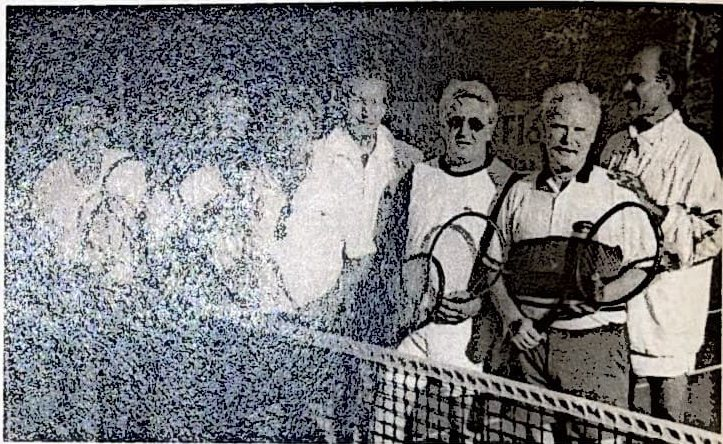
Mannschaftsfoto, 1997 -
1998
Mitte des Jahres zählt der Verein 305 Mitglieder. Die Seniorinnen bleiben in der Verbandsliga, die Jungseniorinnen müssen aus der Oberliga absteigen. Dafür erlebt die Tennisgesellschaft eine wahre Aufstiegsflut: Die I. Mädchen und die Henner-Henkel-Mannschaft steigen in die 1. Leistungsklasse auf, die Jungsenioren direkt wieder in die Verbandsliga. Die erstmals gemeldeten 2. Damen steigen in die 2. Bezirksklasse auf, die 2. Herren marschieren direkt in die 2. Bezirksklasse durch, die 2. Jungseniorinnen steigen in die Bezirksliga auf, die 2. und 3. Senioren in die 1. bzw. 2. Bezirksklasse. Den Vier-Vereine-Mannschaftspokal verteidigen wir und holen beim Endturnier fünf Pokale, bei den Stadtmeisterschaften vier Titel und drei 2. Plätze. Beim Molwitz-Pokal wird es wieder Platz 2. Den dritten Nissan-Wegmann-Cup gewinnt Mathias Huning vom Bundesligisten TC Bad Homburg.
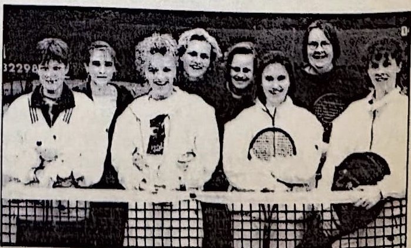
Damenmannschaft, 1998 -
1999
Mitte des Jahres zählt der Verein 306 Mitglieder. Die Jungseniorinnen bleiben in der Verbandsliga, die Seniorinnen steigen in die Bezirksliga ab, die Jungsenioren verlassen die Verbandsliga wieder, und die 2. Herren steigen aus der 2. Bezirksklasse ab. Die I. Damen scheitern in der Aufstiegsrunde zur Verbandsliga, die erst im Vorjahr gemeldeten 2. Damen steigen wieder auf, diesmal in die 1. Bezirksklasse. Katharina Rath wird Bezirksmeisterin der Damen. Den Vier-Vereine-Mannschaftspokal verteidigen wir erneut, beim Endturnier holen wir vier Pokale, bei den Stadtmeisterschaften drei Titel und drei 2. Plätze. Beim Molwitz-Pokal wird es wieder Platz 2.


2000er
-
2000
Mitte des Jahres zählt der Verein 289 Mitglieder. Am 25. Februar werden wir zum „Verein des Jahres 1999“ gekürt und erhalten den Jugendförderpreis der Volksbank. Die I. Damen steigen in der Hallenrunde in die Verbandsliga auf – und im Frühjahr mit denselben Spielerinnen auch in die Sommer-Verbandsliga. Die Damen 40 schaffen den Wiederaufstieg in die Verbandsliga (2001 spielen sie dort als Damen 50). Katharina Rath verteidigt ihren Titel als Bezirksmeisterin. Der Vier-Vereine-Mannschaftspokal geht ab diesem Jahr an den erfolgreichsten Verein beim Einzelturnier: Die TGG gewinnt sieben Pokale und damit auch den Mannschaftspokal. Beim Molwitz-Pokal wird es Platz 2.
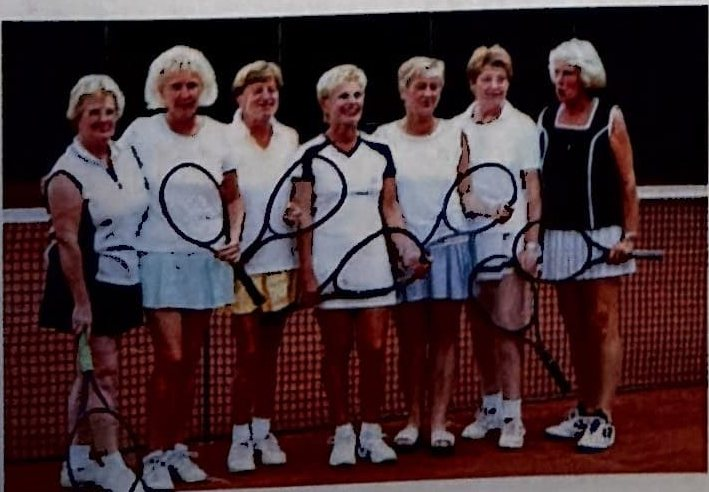
Damenmannschaft, 2000 -
2001
Mitte des Jahres hat der Verein 275 Mitglieder. Die Damen 50 schaffen im ersten Jahr in der neuen Altersklasse direkt den Aufstieg in die Westfalenliga, die neu gemeldeten Damen 40 II steigen in die 1. Bezirksklasse auf. Die Herren 55 scheitern in der Aufstiegsrunde zur Verbandsliga, die Herren 50 steigen aus der Bezirksliga ab. Beim Vier-Vereine-Turnier holen wir vier Pokale, bei den Jugendstadtmeisterschaften drei Titel. Die Cilly-Aussem-Mannschaft und die 1. Mädchenmannschaft steigen in die 1. Leistungsklasse auf. Bei der Stadtmeisterschaft vom 27.6. bis 1.7., ausgetragen bei der TGG, stellen wir sechs Stadtmeister.
-
2002
Mitte des Jahres zählt der Verein 260 Mitglieder. Die Herren 55 und die Herren 30 steigen in die Verbandsliga auf, die Damen 40 aus der Verbandsliga ab. Die TGG stellt drei Jugendstadtmeister, bei den Erwachsenen gewinnt Katharina Rath. Beim Vier-Vereine-Turnier holen wir drei Pokale. In der Winterrunde 2002/2003 steigt die Damenmannschaft in die Westfalenliga auf.
-
2003
Der Vorstand wird um einen weiteren 2. Vorsitzenden erweitert, gewählt wird Oliver Boldt. Die 1. Damen 40 steigen wieder in die Verbandsliga auf, die Herren 30 und Herren 50 müssen aus der Verbandsliga absteigen. Die Jugend-Stadtmeisterschaft wird vom 20. bis 27. Juli erstmals wieder auf unserer Anlage ausgetragen, gemeinsam mit der Anlage des GTK. Beim Vier-Vereine-Endturnier auf unserer Anlage gewinnen wir drei Titel.
-
2004
Die I. Damen steigen in die Sommer-Oberliga auf, die I. Damen 40 leider wieder aus der Verbandsliga ab. Beim Vier-Vereine-Turnier gewinnen wir nach zwei Jahren Pause wieder den Mannschaftspokal und vier Einzelpokale, beim Molwitz-Pokal nach drei Jahren wieder einen 2. Platz. Die Stadtmeisterschaft findet erneut auf unserer Anlage statt: Katharina Rath wird dreifache Siegerin – im Einzel, im Doppel mit Denise Wolf und im Mixed mit Christian Schüring (Buer). Renate Lück gewinnt das Damen-50-Einzel gegen Petra Schwarz. Zweite Plätze belegen Markus Erwin (Herren B), Jochen Kupfer (Herren 40), Reinhard Holthaus (Herren 50) sowie Jochen Kupfer und Reinhard Holthaus im Herren-Doppel 40.
-
2005
Die I. Damen müssen leider wieder aus der Oberliga absteigen, die Herren 60 steigen in die Bezirksliga auf. Beim Vier-Vereine-Turnier gewinnen wir erneut den Mannschaftspokal und vier Einzelpokale. Bei den Stadtmeisterschaften siegt Katharina Rath bei den Damen A und im Damen-Doppel mit Denise Wolf, die außerdem mit Marcus Seidel (TC Buer) das Mixed gewinnt. Renate Lück wird mit Eva Zint Zweite im Damen-Doppel 50, ebenso Martin Püttmann und Martin Haselier im Herren-Doppel 30 und Reinhard Holthaus bei den Herren 50. Bei den Damen B siegt Constanze Nöfer. Bei den Jugend-Stadtmeisterschaften sind wir mit sechs Titeln und drei 2. Plätzen der erfolgreichste Verein.
-
2006
Die Herren 55 müssen aus der Ruhr-Lippe-Liga absteigen. Die I. Damen steigen wieder in die Oberliga auf, die Herren 60 in die Ruhr-Lippe-Liga. Beim Vier-Vereine-Turnier gewinnen wir erneut den Mannschaftspokal und drei Einzelpokale. Im Winter halten sich die 1. Damen in der Westfalenliga.
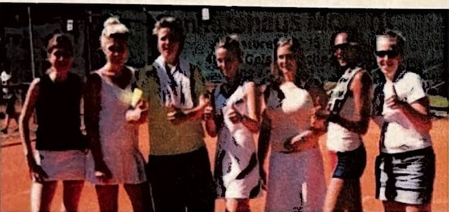
Damenmannschaft, 2006 -
2007
Das Jahr des 75-jährigen Bestehens wird gleich zu Beginn vom plötzlichen Tod unseres 1. Vorsitzenden Hermann Lück überschattet. Zuvor war bereits Monika Deimel-Behnert verstorben.
-
2008
Der Verein hat 225 Mitglieder. Erwin Blauser tritt im Laufe der Saison als 2. Vorsitzender zurück. Die II. Damen 55 steigen in die Ruhr-Lippe-Liga auf, mit Inge Uhlenbruch, Anne Hillebrandt, Petra Schwarz, Resi Krusenbaum, Ingrid Kramer und Kornelia Hirsch. Beim Vier-Vereine-Turnier geben wir unsere Vormachtstellung ab: Beim Endturnier gewinnen wir nur zwei Pokale.
-
2009
Neuer 2. Vorsitzender wird Udo Erwin. Kurz vor dem Pumuckl-Turnier tritt Kornelia Hirsch zurück, das Amt des Jugendwarts übernehmen Bärbel und Udo Erwin kommissarisch. Die Herren 55 steigen in die Ruhr-Lippe-Liga auf, mit Alfred Krusenbaum, Klaus Klein, Erwin Blauser, Werner Diehl, Reiner Hillebrandt, Uwe Poppek, Gerd Lemke und Ulrich Heier. Beim Vier-Vereine-Endturnier gewinnen wir wieder zwei Pokale.


2010er
-
2010
Neue Jugendwarte werden Christiane Hering und Bärbel Erwin, neuer Geschäftsführer wird Klaus Hering. Bei den Jugend-Stadtmeisterschaften siegt Oliver Hering bei den Junioren U16 und gewinnt mit Fabian Schuler auch das Doppel. Bei den Erwachsenen siegen Uschi Gross und Peter Kalecinski bei den Senioren 55+. Beim Vier-Vereine-Turnier spielt der PSV Gelsenkirchen für die TG Bulmke – damit sind wir der letzte verbliebene Gründungsteilnehmer. Auch in diesem Jahr gewinnen wir zwei Pokale.
-
2011
Zu Jahresbeginn zählt der Verein 196 Mitglieder. Manfred Boldt wird für zwei weitere Jahre als 1. Vorsitzender bestätigt. Kurz vor der Tennissaison, am 22. März 2011, brennt unser Clubhaus ab. Es beginnt ein langer Weg durch die Ämter. Im Juni wird das Clubhaus abgerissen, im Herbst beginnt der Wiederaufbau. Sportlich wird Oliver Hering Stadtmeister der Herren B, Mara Vogel Meisterin der Juniorinnen U16. Beim Vier-Vereine-Turnier mit neuen Konkurrenzen stehen wir in sechs von sieben Endspielen, können aber keines gewinnen.
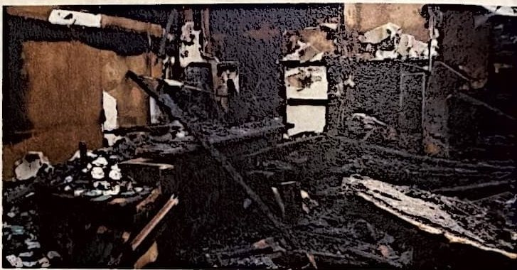
Das Clubhaus nach dem Brand am 22. März 2011 -
2012
Im Jahr des 80-jährigen Jubiläums gibt es zwei Aufsteiger: die 1. Damen und die Damen 40. In die Ruhr-Lippe-Liga steigen die Damen 40 mit Susanne Sack, Sue Holt-Klein, Birgit Remy-Gerigk, Regine Fortmann, Heidi Heier, Bettina Jankowski, Eti Blauser und Sylvia Moshövel auf. Nach vielen Jahren müssen die Damen 55 aus der Verbandsliga absteigen. Beim Vier-Vereine-Turnier gewinnen wir drei Pokale, Mannschaft des Jahres werden die 1. Damen. Unser neues Clubhaus und das Gelände drumherum werden fertig – das Herbstfest feiern wir bereits in den neuen Räumen.
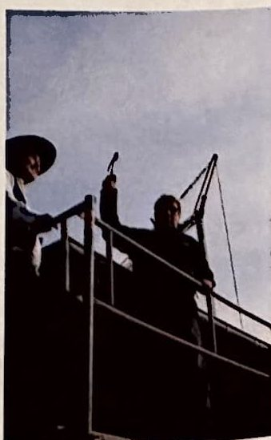
Das neue Clubhaus entsteht, 2012


Fortsetzung folgt
Und die Geschichte geht weiter
Diese Chronik basiert auf der Festschrift zum 80-jährigen Jubiläum aus dem Jahr 2012. Die Jahre danach ergänzen wir nach und nach. Du hast Fotos, Zeitungsausschnitte oder Erinnerungen aus dem Vereinsleben? Wir freuen uns über jede Ergänzung.